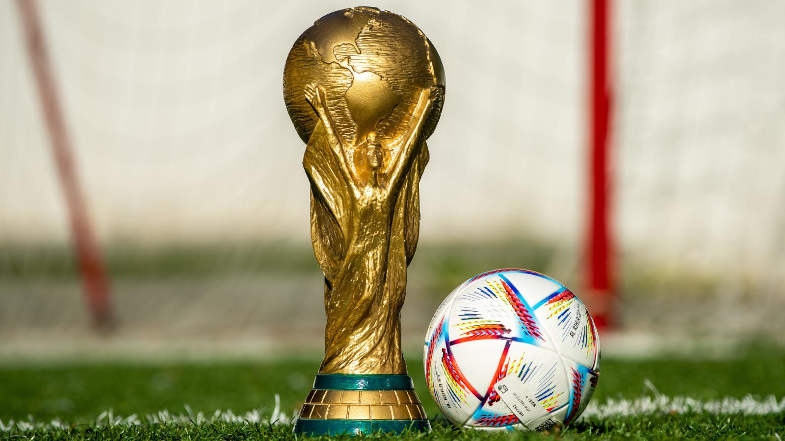

Sejarah Sepakbola Dunia
sumber: olahraganesia.id
Sejarah sepak bola dunia kali pertama dimulai pada abad ke-19 di tanah Britania Raya, yakni Inggris.
Pada saat itu, sepak bola telah berkembang dan menjadi salah satu cabang olahraga yang paling banyak
dimainkan oleh masyarakat dari berbagai penjuru dunia. Tak heran, apabila olahraga ini sudah populer
sejak dulu dan semakin disukai sampai sekarang.
Sebelum berkembang dan terkenal seperti saat ini, ada beberapa versi terkait siapa pencetus pertama
kali sepak bola. Ada yang menyatakan bahwa permainan sepak bola sebenarnya berasal dari China.
Namun, ada juga versi lain yang menyebutkan bahwa sepak bola berasal dari Romawi.
Menurut Fédération Internationale de Football Association (FIFA) sebagai organisasi induk sepak bola
Internasional, sepak bola berasal dari daratan Asia Timur, China, yakni pada sekitar abad ke-2 dan
ke 3. Di masa Dinasti Han, masyarakat China sudah suka melakukan sepak bola dengan cara digiring dan
dimasukkan ke dalam jaring kecil. Bola yang digunakan pada masa ini terbuat dari kulit hewan.
Masyarakat China dahulu menyebut olahraga yang dimainkan di atas bidang persegi ini dengan sebutan
tsu chu.
Sepakbola Modern
Sejarah sepak bola modern mulai benar-benar mengalami perkembangan besar pada tahun 1815. Beberapa
universitas dan sekolah di Inggris menjadikan sepak bola sebagai salah satu olahraga bagi para
pelajarnya. Sampai pada akhirnya pada tahun 1857, berdiri klub sepak bola pertama di dunia dengan
nama Sheffield Football Club di Inggris.
Tak lama berselang, terjadi sebuah perkumpulan yang mempertemukan 11 wakil dari sekolah dan klub
sepak bola di London, Inggris untuk mendirikan Football Association (FA) sebagai asosiasi sepak bola
Inggris. FA sendiri menjadi organisasi pertama yang mengeluarkan peraturan permainan sepak bola
secara resmi. Lahirnya FA menjadikan sepak bola menjadi lebih teratur, terorganisir, dan banyak
masyarakat yang terhibur.
Setelah berdirinya FA, pada tahun 1883 diselenggarakannya turnamen internasional pertama yang
diikuti oleh empat negara dari Britania Raya, diantaranya yaitu Inggris, Irlandia, Skotlandia, dan
Wales. Seiring berjalannya waktu, sepakbola yang menjadi fenomena dan digandrungi masyarakat Inggris
perlahan menyebar hingga seluruh Eropa.
Sejarah sepak bola semakin terukir di dunia Internasional pada saat didirikannya Federation
International de Football Association (FIFA) pada 21 Mei 1904. Pembentukan induk organisasi sepak
bola internasional ini ditandatangani oleh tujuh negara, yaitu Prancis, Belgia, Denmark, Belanda,
Spanyol, Swedia, dan Swiss. Meskipun Inggris lebih dulu memainkan sepak bola, tetapi negara tersebut
tidak ikut serta pada masa pembentukan FIFA. Inggris secara resmi bergabung dengan FIFA pada
beberapa tahun berikutnya.
FIFA World Cup

sumber: football-espana.net
Piala Dunia FIFA pertama kali diselenggarakan pada tahun 1930, ketika presiden FIFA Jules Rimet
memutuskan untuk menggelar turnamen sepak bola internasional. Piala Dunia pertama, diselenggarakan
di Uruguay pada 1930, diperebutkan sebagai final turnamen yang hanya terdiri dari 13 tim yang
diundang oleh organisasi. Sejak saat itu, Piala Dunia FIFA telah mengalami ekspansi secara
berturut-turut dan format yang dibuat ulang untuk saat ini 32 tim final turnamen diawali oleh proses
kualifikasi dua tahun, yang melibatkan hampir 200 tim dari seluruh dunia. Piala dunia edisi terakhir
pada tahun 2022 dimenangkan oleh Argentina
Sepakbola sebagai hiburan
Sebagai hiburan, Sepak bola itu seni, seni memainkan si kulit bundar dengan tujuan mencetak gol
sebanyak-banyaknya ke gawang lawan. Seni memainkan bola inilah yang menjadi hiburan. Hiburan yang di
maksud adalah drama-drama yang terjadi dalam 90 menit waktu normal, keahlian menggocek bola, skill
tingkat tinggi untuk melewati lawan, gol-gol indah yang tercipta dari kegigihan dan kecerdasaan sang
pemain dan masih banyak lagi yang menjadikan sepak bola itu sebuah hiburan. Dan bahkan di luar sepak
bola, tetapi tidak bias terlepas dari sepak bola yaitu supporter,. Berteriak, bernyanyi dan medukung
tim kesayangaan itu merupakan sebuah hiburan tersendiri bagi beberapa orang pencinta sepak bola.